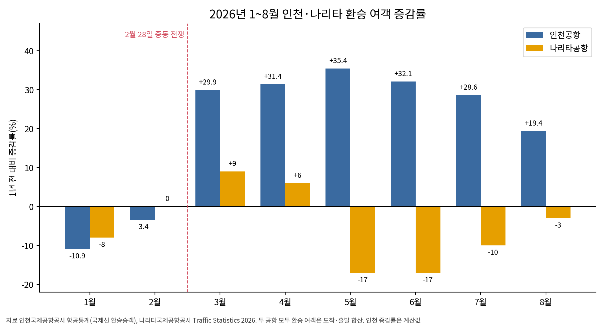
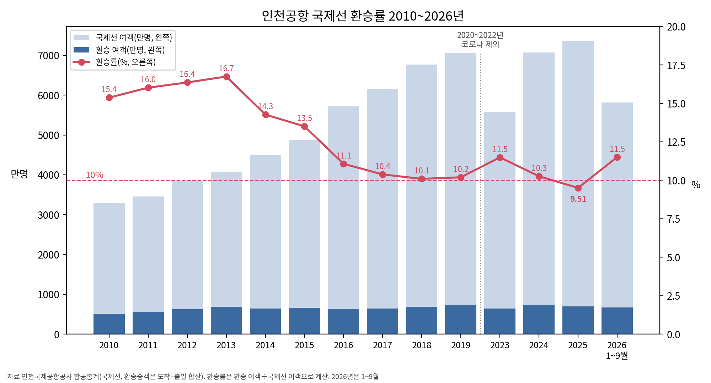
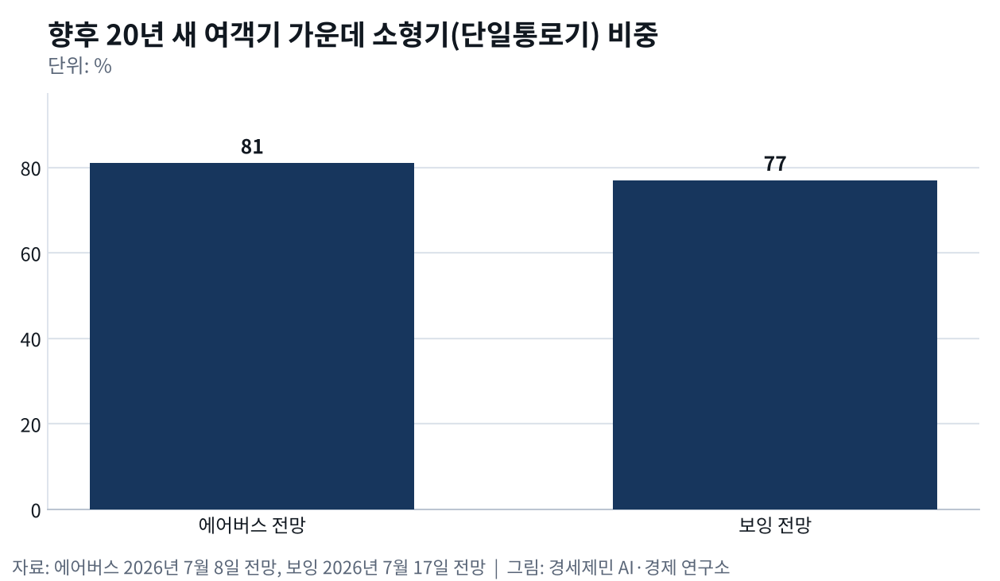
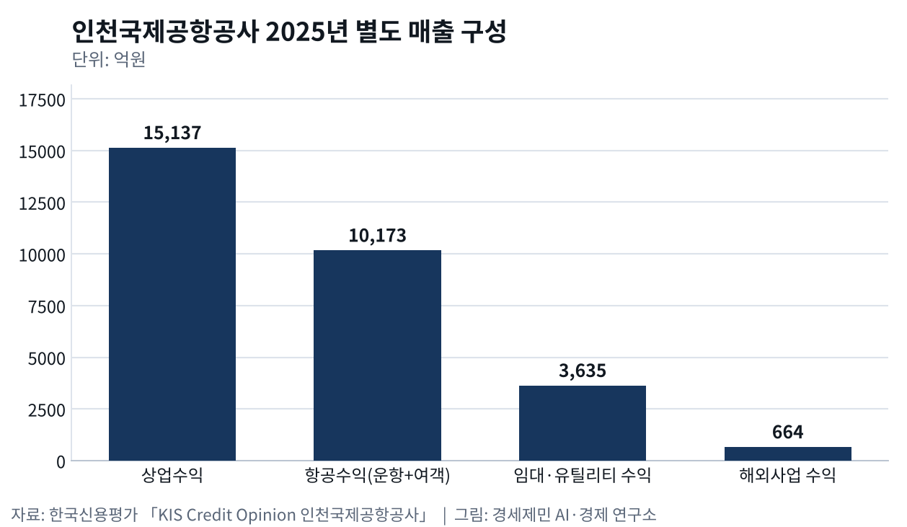
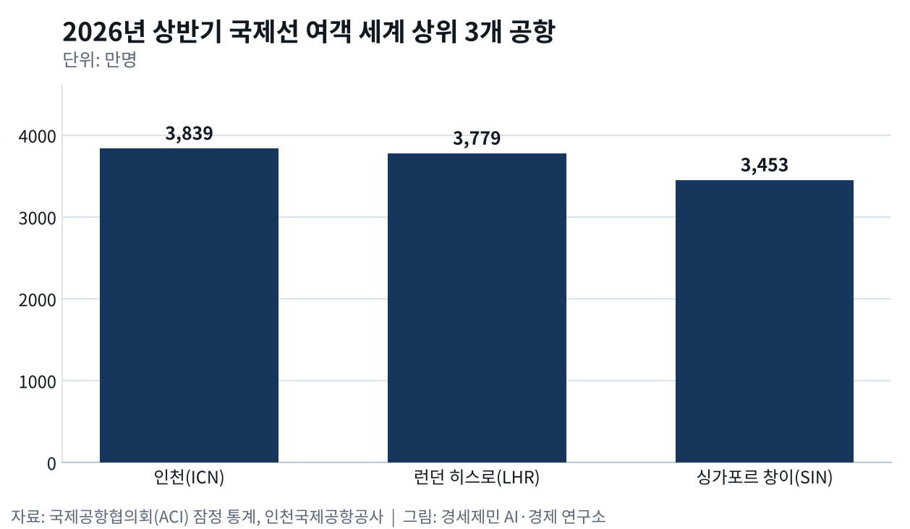

인천공항 미래
인천공항 미래25편
세계 3위가 채워야 할 것 — 환승·화물·배후단지·재원

글로벌 인천공항11편
숫자로 보는 인천공항 — 환승률·화물·면세·항공사
항공산업2편
MRO와 UAM
인천공항 미래25편
- 정비사 72만명 시대 오는데, 해외 의존은 56%에서 60%로 갔다인천 MRO 격납고 유치는 넷, 지금 돌아가는 곳은 개조시설 하나뿐
- 창이는 제조사를 불러 훈련센터를 얻었고, 인천은 정비만 모았다셀레타에 롤스로이스와 에어버스 등 80곳, 그 사이에 훈련센터가 들어섰다
- 인천공항 MRO단지에 인천 업체 2곳, 도색 격납고는 전무MRO 허브 얼라이언스 21일 발족, 개조 공급망 40곳 가운데 인천 업체는 2곳
- 인천공항 25년, 동북아 허브 채우려면 지방공항 직결이 답인천~제주 5월 12일 재개, 9년 만의 정기편 복원
- 인천공항 25년, 동북아 허브 채우려면 지방공항 직결이 답인천공항 지난해 총 여객 7407만명, 환승객 804만명 역대 최다 경신
- 노무현 정신 계승하되 정책은 그만, 5극3특 권역별 공항공사체제로인천국제공항공사·한국공항공사·가덕도건설공단 통합은 5극3특 역행
- 배당 3조3500억 빠져나간 인천공항, 이제 통합까지… 인천시 항공예산 40% 삭감4월 8일 국회 예결위, 공항 통합 논의 사실상 인정
- 인천공항 매출 2조5천억인데 인천 몫은 1조3천억… 공항경제권 빠진 성장2024년 국제선 여객 7066만명 세계 3위
- 인천공항 25년, 67조원 생산유발 세계 3위… 5단계 없으면 추월당한다18조원 82% 자체조달, 누적 배당 3조원, 5단계 6조원 재원 충분
- 무게는 세계 3위, 질은 아직 뒤졌다곳간과 시설은 세계 3위지만 연결·수익·재원은 세계 표준에 못 미친다
- 흑자 절반은 국고로, 부채비율 96%… 배당을 5단계에 묶어야 한다통합은 막았지만 배당 유출은 그대로, 부채비율이 96%까지 찼다
- 면세 한 곳에 매달린 인천공항, 수익원을 넓혀야 산다매출의 63%가 면세·상업인데 그 면세가 사양산업이 됐다
- SAF 2년 늦은 인천, 환적 118만톤이 샌다유럽보다 2년 늦은 지속가능항공유, 히스로는 세계 SAF의 17%를 빨아들인다
- 항공자유화가 화물을 늘린다, 실증된 지렛대다운수권 빗장을 풀면 노선과 빈도가 열린다, 그 인과를 데이터가 보여준다
- 사람을 부르는 열쇠, 비자면제다운수권이 하늘길 자리를 열어도, 비자가 막히면 사람은 오지 않는다
- 인천공항 2033년 포화, 5단계는 지금 삽 떠야 한다4단계로 연 1억600만명 갖췄지만 가동률 70%, 빈자리가 3할이다
- 강한 관문은 지방까지 닿아야 두꺼워진다, 연결망이 답이다
- 활성화는 공사 독립성 위에서만 굴러간다, 통합은 그 토대를 흔든다흑자 공사가 적자 지방공항과 10조 가덕도 건설비를 떠안으면 자율 집행력이 준다
- 통과하는 공항에서 만드는 공항으로배후단지에서 화물을 만들고, 정비로 고부가를 더하고, 바다와 하늘을 잇는다
- 반도체는 전략 자원이다, 다음 알짜는 배후단지에서 키운다세계가 한국 반도체를 찾는다, 항공이 그 길이라 수요가 곧 인천으로 온다
- 환승은 강한 관문 위에서만 두꺼워진다걸프는 환승이 전업이지만 인천은 두터운 자국 수요가 토대다
- 세계 3위 인천공항, 머릿수를 넘어 1인당 부가가치까지… 고객은 항공사가 먼저다채움의 자는 두 개다, 물동량의 양과 1인당 부가가치를 같이 본다
- 세계 3위에 취하면 골든타임 놓친다강한 건 곳간과 시설, 약한 건 연결이다, 더 키울 게 아니라 채워야 한다
- 세계 3위 인천공항, 크기로는 못 이긴다… 채움과 환승, 부가가치가 길이다경쟁자는 환승 의존 걸프도 자국 관문 중국도 아닌 일본이다
- '세계 3위' 인천공항이 키워야 할 고부가가치 핵심 두 개여객은 입국 소비, 화물은 반도체 수출, 인천이 쥔 두 고부가가치
글로벌 인천공항11편
- 나리타 환승 6%↓ 인천 20%↑, 도쿄와 다투는 일본발 미주 환승26.10.12

환승률 9.51% 인천공항, 허브는 10%를 지켜야26.10.11 반도체 운송액 110%↑, 인천공항 화물 장비·바이오·특송으로 넓혀야26.10.10
반도체 운송액 110%↑, 인천공항 화물 장비·바이오·특송으로 넓혀야26.10.10 면세 임대료 41%↓ 인천공항, 다음 금고는 항공사다26.10.10
면세 임대료 41%↓ 인천공항, 다음 금고는 항공사다26.10.10
새 여객기 81% 소형기, 직항 대세에 허브는 뭘까26.10.10
항공사만 101개 인천공항, 독점인데 경쟁하는 이유26.10.08- 수출은 하늘로 39%, 정비는 해외로 60%26.09.29
- 인천 국제선 여객 세계 1위, 화물 허브는 푸둥에 밀렸다26.09.29
 허브는 밀도로 이긴다, 인천 환승 598만명26.09.28
허브는 밀도로 이긴다, 인천 환승 598만명26.09.28 인천공항 일자리 66만개, 인천 몫은 21만개26.09.27
인천공항 일자리 66만개, 인천 몫은 21만개26.09.27
인천공항, 개항 25년 만에 국제선 세계 1위26.09.25